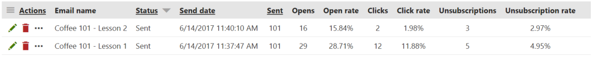
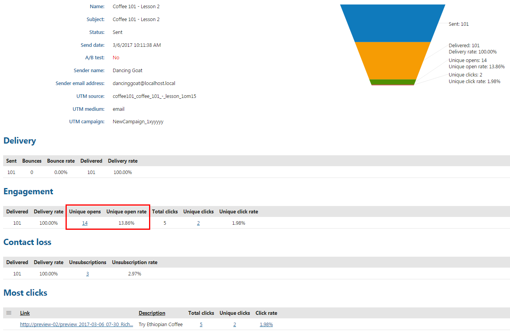
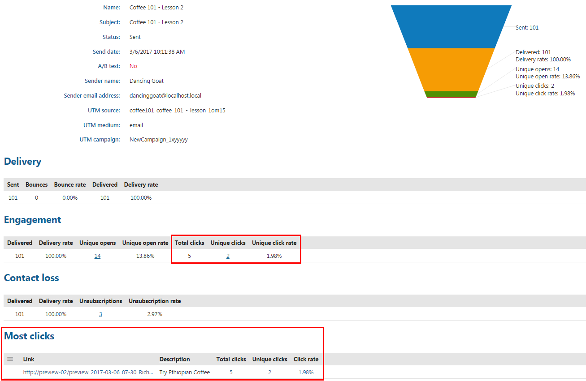

Tracking marketing emails
When using email feeds, such as email campaigns and newsletters, it is important to determine their overall effectiveness and optimize the individual marketing emails according to the results. You can achieve this by tracking the sent emails and monitoring the reactions of recipients.
You can use two types of tracking for marketing emails.
Tracking opened emails – keeps statistics about the number of emails that recipients actually open.
Tracking clicked links – monitors the number of clicks that recipients perform on hyperlinks placed in the content of marketing emails.
First, ask your administrator to enable marketing email tracking for contact group recipients.
Individual email feeds have tracking enabled by default. You can check the configuration of individual email feeds:
Open the Email marketing application on the Email feeds tab.
Edit (
 ) an email campaign or a newsletter.
) an email campaign or a newsletter.Switch to the Configuration tab.
Make sure that Track opened emails and Track clicked links are enabled.
Click Save.
Note
You cannot use tracking retroactively for emails that have already been sent before you enabled the tracking settings.
The system does not include draft emails in the tracking statistics.
Logging marketing email actions as activities in Kentico EMS
If you want the actions related to a specific email feed to be logged as on-line marketing activities, enable the Log on‑line marketing activities property on the Configuration tab of individual email feeds.
Email marketing activities include the following types of activities:
Newsletter subscription
Email feed unsubscription
Opt out from all marketing emails
Email opening
Clickthrough tracking
Tracking the email open rate
This type of tracking allows you to monitor how many marketing emails are actually opened by recipients. Open rate is one of the key metrics for monitoring the email feed's success.
The system tracks the open rate by embedding a small, invisible image into the content of emails. When this image is requested from the server for the first time, the system marks the email as received and opened for the given recipient. As a result, the indicated number of opened emails may be slightly lower than the actual amount.
Emails are only counted as opened if the email client of the recipient allows the loading of images.
If the recipient clicks on a link contained in the email and Track clicked links is enabled for the email feed, the system recognizes the email as opened even if images are blocked.
To view the statistics of marketing emails, edit an email feed on the Emails tab. You can find basic email statistics right on this tab. Both percentage and absolute values are available for the email Opens, Clicks, and Unsubscriptions.

Enable monitoring bounced emails to see the number of delivered emails and the delivery rates of the emails.
Hover your mouse over the value in any column with a rate to display how the rate is calculated.
To see more detailed statistics of a specific email, edit (
) an email and navigate to the Reports -> Overview tab. On the Overview tab, you can see the summary of all email statistics. Regarding the opened emails, you can find there:
Unique opens – shows how many different recipients opened the email.
Unique open rate – displays the unique opens as a percentage. Calculated as the number of unique opened emails from delivered emails (i.e., sent emails without bounced emails), when bounced emails are monitored, or from sent emails, when bounced emails are not monitored.

Viewing opened email statistics on the Overview tab
When you want to go through a list of all recipients who opened the email, switch to the Reports -> Opens tab. You can filter the recipients according to their email address or the time interval during which they opened the email.
Tracking clicked links
You can measure the effectiveness of marketing emails based on their click-through rate. The system tracks which links in marketing emails are clicked by the recipients and how many times.
If you enable link tracking for an email feed, all links in the marketing emails are converted to tracking links when sent out. This applies to both email campaigns and newsletters. When a recipient clicks a tracking link, the system stores a record of the event.
To view the link statistics of emails, edit an email feed on the Emails tab. You can find the percentage of the clicked emails in the Click rate column, as well as the absolute number of the unique clicks in the Clicks column.
Enable monitoring bounced emails to see the number of delivered emails and the delivery rates of the emails.
Hover your mouse over the value in any column with a rate to display how the rate is calculated.
To see more detailed statistics of a specific email, edit (
) an email and navigate to the Reports -> Overview tab. On the Overview tab, you can see the summary of all email statistics.
You can find the following statistics regarding clicked links in the Engagement section:
Total clicks – indicates how many times links in the email were clicked, including multiple clicks from the same recipient.
Unique clicks – shows how many different recipients clicked on at least one link in the email.
Unique click rate – displays the click-through rate of the link as a percentage. Calculated as the number of unique clicks from delivered emails (i.e., sent emails without bounced emails), when bounced emails are monitored, or from sent emails, when bounced emails are not monitored.
The Most clicks section displays statistics for individual links.
For emails containing multiple links, the total number of unique clicks registered in the Most clicks section may be different than the value in the Engagement section. For example, if a recipient clicks three different links in an email, the Engagement section registers one unique click, but the Most clicks section registers a unique click for each of the given links.

Viewing the Most clicks section on the email report Overview tab
When you want to go through all links that have been clicked, switch to the Reports -> Clicks tab. You can filter the links according to their target or their description (label).
You can also ask your administrator to help you exclude links from tracking.